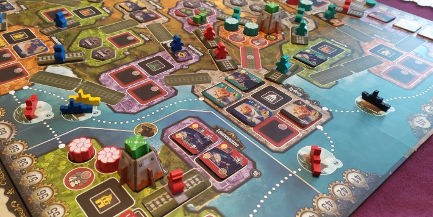

Я пятнадцать лет делаю игры, но до сих пор не могу объяснить собственному ребёнку, почему игра, в которую он играет, плохая. То есть аргументы у меня есть и я могу рассказать про топорную динамику уровня, или кривую прогрессию и сломанный баланс.
Весь процесс игры, в которую играет мой ребенок, по сути состоит в перестановке мебели и посуды в доме. Я могу разложить по пунктам интересность игры, оценить баланс, подсветить проблемы, но проблема что каждый мой пункт выслушивается, кивается и процесс переставления посуды продолжается. Моё «объективно» оказывается не чутким измерительным прибором, востребованным рынком, а просто чьим-то раздражением с претензией на экспертизу.
Игра, в которую вы сейчас играете, работает так — как спроектирована, и там, скорее всего будут гача (легкая, но будет), сессии, дейлики, сезоны, пропуски и таблица рейнтингов. Эта не «плохо сделана» — она сделана просто отлично, хорошо оптимизирована не под ваш вечер, а под ваш год. Люди, которые её делали, знают что такое игровой дизайн больше вас и меня и называть её плохой — это как называть плохим молотком отвёртку.
Да и игра, которая действительно плохо сделана будет кривой, недоделанной и местами сломаной, но может обрасти сообществом, которое живёт годами. Тут работает что-то помимо дизайна, давайте назовем это душой игры... не у всех «хороших» игр есть душа.
Игра не для вас. Детская, женская, для рыбаков, для любителей табличек и поездок на тракторе по лесу... о, или полежать камнем в том же лесу, наблюдая как мимо проезжает трактор. Оценивать её какими-либо критериями бессмысленно в той же степени, в какой бессмысленно оценивать ваш любимый рогалик критериями того, кому нравится переставлять посуду в виртуальном доме.
Ретеншн
Удержание не придумали маркетологи ради денег, оно старше любого батлпаса и есть в любой игре, которая вам когда-либо нравилась. Elden Ring это петля удержания «ну ещё один раз, я теперь знаю его атаки». Hades это прогрессия между забегами, специально спроектированная так, чтобы проигрыш не выбрасывал вас из игры. BG3 удерживает сценарием и историей «а что там в следующей сцене», этих сцен там набралось на триста часов. Вспомните тетрис, который держал людей годами без единого сервера и часов там наиграно дайбоже.
Разницы между «хорошей» и «плохой» игрой по наличию удержания нет, ну или я её не заметил. В Hades петля это и есть игра, вы за неё заплатили один раз при покупке, но в условной сессионке петля это только витрина, и вам предлагают заплатить за право не ждать. Механизм остался тот же самый, поменялось только место где стоит касса.
Это однако не снимает вопроса «почему это работает», а работает потому, что человеческому мозгу нравится чтобы было просто и быстро, но почему одна и та же механика в одном случае выглядит как мастерство, а в другом как манипуляция вашим временем?
Трение
Самая недооценённая величина в разговоре про игры — это не качество, не глубина и не оценка — это трение, то есть сколько усилий нужно, чтобы начать играть. Что требует «правильная» игра вечером буднего дня?
вспомнить билд → 10 минут
прочитать, что сломали патчем → 15 минут
дождаться, пока соберётся пати → ???
настроиться → бесценно
не облажаться перед тиммейтами → весь вечер
выделить два часа без пауз → есть ли ониА «плохая» требует просто открыть клиент, дальше матчмейкинг за тридцать секунд сделает всё сам и вот вы уже гасите пауков, или забиваете еще один гол бампером. Разговоры про удовольствие на час времени? Забудьте. Удовольствие на час предполагает, что у вас есть этот час... свободный час, целый час в правильном настроении без никто вокруг. У большинства взрослых людей его нет, от силы у них есть минут двадцать между «вернулся с работы», «уложил ребёнка», «посмотрел кинцо»... а там тоже от силы полчаса с перемотками и «отрубился». В эти двадцать минут шедевр на час, а то и два, физически не помещается, какие бы гении его не сделали.
Есть конечно часть аудитории «правильных» игр с гайдами, оптимизациями, рейтингами и ощущением что это какие-то бессмертные, которые нашли четыреста часов на игру. Но мне кажется, что они нашли еще один способ превратить удовольствие в работу без зарплаты. А люди, которые ушли в «плохие» игры, часто ушли не от качества... они ушли от обязательств.
Друзья
Вторая сила, против которой не будет работать ни один аргумент про качество. Можно хотеть нормальную игру сколько угодно, но если трое из четырёх уже сидят в лобби, вечер заканчивается не философским выбором и настройкой билда, а «ну чё, залетаем?». Совместная катка кладёт на обе лопатки и BG3, и второго фолыча и шедевры Миядзаки... тут плохая игра хороша до того момента, пока над ней можно вместе поржать.
При этом есть еще и поколенческий разлом, и кто вырос на пиратских дисках и одиночных кампаниях, инстинктивно меряет игру сюжетом, атмосферой и временем до титров. А кто вырос на F2P и дискорде — насколько быстро можно собрать пати, есть ли сезон, живёт ли чат после матча. Это просто разные определения слова «хорошая игра».
Половина всех «почему вы в это играете» на самом деле звучит как «почему вы тусуетесь в том баре». Ну потому что там свои. Да бар сомнительный, да, там дерутся каждый вечер, уборная... хм, она там есть... но свои от этого никуда не деваются.
Почему «хорошая» студия делает «плохо»
Здесь обычно начинается абзац про жадных издателей, но я вынужден вас разочаровать, потому что сам нахожусь по ту сторону экрана. Студиям, которые умеют делать хорошее, всё равно приходится делает сервис, иначе не сходится экономика покупки.
Законченная одиночная игра — это разовая выручка при постоянных затратах на производство. Вы платите команде N месяцев и продаёте копию один раз, дальше выручка падает по экспоненте, и через полгода вы либо начинаете следующий проект, либо распускаете команду. Сервис — это те же затраты, размазанные по годам, но с выручкой каждый месяц, пока держится ретеншн.
Час контента в AAA-сингле стоит очень дорого, подбираясь к порядку величины где-то около миллиона вечнозелёных. Час контента в сопоставимом по качеству сервисе стоит заметно меньше, скажем, тысяч двести, разница существенная, но она даже не в цене производства, а в том, сколько раз этот час потребят.
Час сингла проходится один раз, хорошо... может два, очень редко три, если игра действительно шедевральная. Ок, если мы сподобились выпустить ремейк или редукс пройдут еще раз. В сумме получим максимум четыре. Игрок увидел катсцену, зачистил локацию, узнал, кто предатель и всё... этот час использован и больше никогда не повторится. Получается вы заплатили миллион за два-три просмотра на игрока.
Час сервисного контента будет картой, режимом, ивентом или боссом, в который заходят снова и снова. Двадцать раз, сто раз, весь сезон. Теперь вы заплатили двести тысяч и делите их не на игроков, а на прохождения.
Привести игрока стоит примерно одинаково, что в сингл, что в сервис, рекламщики не спрашивают, какая у вас бизнес-модель и там, и там вы заплатили доллар. Только в сингле этот доллар окупается одной транзакцией и он продал вашу коробку один раз. Спасибо, до свидания. В сервисе тот же самый доллар окупается каждый месяц, что игрок остаётся, и через год он окупился 12 раз, а через два уже 24.
Никакой магии, просто тот же час работает один раз или сто. Один и тот же доллар привлечения возвращается один раз или двадцать. А дальше можно долго рассуждать про души и шедевры, желательно вдали от ЛПР и продюсера.
Потому что если вы смотрите на эту арифметику не как игрок, а как продюсер, который отвечает будет ли у команды работа через год, «сервисная» игра перестаёт выглядеть «плохой» и начинает выглядеть как способ не увольнять сотню отличных спциалистов еще год.
Это не оправдание, и я пойму ваше возмущение в комментариях, но они ничего не меняет и будет адресовано не тому. Претензия «зачем вы сделали дейлики» предъявляется дизайнеру, но таблицы для дейликов заполняют игроки своими действиями, отзывами, и постами на форумах, которые превращаются в метрики, из которых менеджмент делает план на следующий квартал.
Не всё про деньги
Процентов пять «плохого» гейминга это просто дешёвая, короткая, глупая и нужная игра. Тоже нужная, когда сил на шедевр нет, а поиграть хочется. Иногда она бесплатная, иногда плохая по вкусу критиков, но идеально попадающая в чью-то очень конкретную фантазию: рыбалка на тракторе в лесу, таблички Excel в космосе, коллекционирование куриц, симулятор мойки под давлением. Людей со странными фантазиями значительно больше, чем вы можете себе представить, и рынок «плохих игр» для них это единственное место, где их фантазии вообще хоть кто-то обслуживает.
Если убрать из уравнения деньги и маркетинг, часть «плохих» игр исчезла бы. Вместе с ними исчезли бы тысячи часов совместного времени, мемы, дружба через пол-страны и странные истории, которые люди потом пересказывают за кофе. Не самый плохой размен, если честно.
Невывод
Мне по-прежнему жалко времени на очередной кривой тайтл и я по-прежнему думаю, что надо играть в хороши игры, и не играть в плохие. Но спорить не буду, иногда я слышу «уберите дейлики, делайте игру, а не продукт»... что обидно, ибо игры были продуктом с самого первого картриджа.
Другой вопрос что именно вам продают — доступ к опыту или возможности не ждать? В первом случае вы покупаете игру, во втором — свое время. Оба обмена приносят кому-то удовольствие, наверное... мне не нравится переставлять виртуальную посуду в виртуальном доме, но и мои «хорошие» игры для кого-то «плохие».
← Все статьи